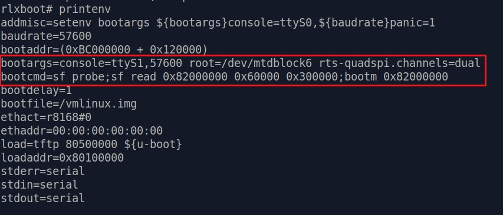

Getting a Shell
So far we haven't been successfully getting access to a shell. That's good for manufacturers, but a complete shame for us pentesters!
Thankfully the community has a long history of pentesting / modding TP-Link products, and
there are some useful information you can find on the internet. To be more specific - Access U-Boot shell.
At first we thought the U-Boot console of C200 is locked, as there is no classic "Press any button
to stop boot process" message in the boot log..
But after looking a bit on the internet, we found that TP-link actually has a secrete passphrase to enter U-Boot shell. In some product it's tpl,
in some it's slp . In the case of C200, you will need to enter slp when you see "Autobooting in 1 seconds"
in the boot log.
Beware that C200 cameras actually have two stages of booting. First stage is to verify uboot, kernel and
romfs partition. Then it will reset and enter the "real" boot process.[*]
{kind=link}
Quickly entering slp on second "Autobooting in 1 seconds", we will be granted the U-Boot command prompt rlxboot# .
From there on, we can issue printenv to check various U-Boot environment variables.
The two important variables we are interested in are
bootargs and bootcmd :
bootargs=console=ttyS1,57600 root=/dev/mtdblock6 rts-quadspi.channels=dualbootcmd=sf probe;sf read 0x82000000 0x60000 0x300000;bootm 0x82000000
{kind=link}
We can simply add init=/bin/sh at the end of bootargs by issuing :
setenv bootargs console=ttyS1,57600 root=/dev/mtdblock6 rw rts-quadspi.channels=quad init=/bin/sh
After that, just copy-paste the content of bootcmd into
U-Boot command prompt and press enter. U-Boot should proceed on booting and ultimately you will end up in a root shell! [*]
{kind=link}
Now What?
Although we've got a root shell, this doesn't mean we have full control over a fully functional C200 yet.
By adding init=/bin/sh into
bootargs, we actually skipped a lot of initialization process of the embedded Linux system. No script is executed and places like /proc,
/dev ... that are populated during init process don't have anything in them either.
{kind=link}
This poses a huge problem for us, as many critical commands and functions that can help for information gathering[*] actually collect information from these directories.
The first and most important thing we need is to populate /proc. We
can issue mount -t proc none /proc manually to ask the kernel to populate /proc for
us.
{kind=link}
After /proc is populated, commands like ps and netstat work
properly. However they still won't give much useful information because again, no init process is executed if we use init=/bin/sh technique
to get a shell.
There is no easy way to execute /sbin/init, as PID 1 is assigned to /bin/sh -
our shell.
{kind=link}
By now it may seem that we haven't really made any progress. But with the information we can get in /proc, the best is yet to come.
By
the way, here is a python script I wrote to automate this process, if you are feeling too
lazy to do these steps manually :p